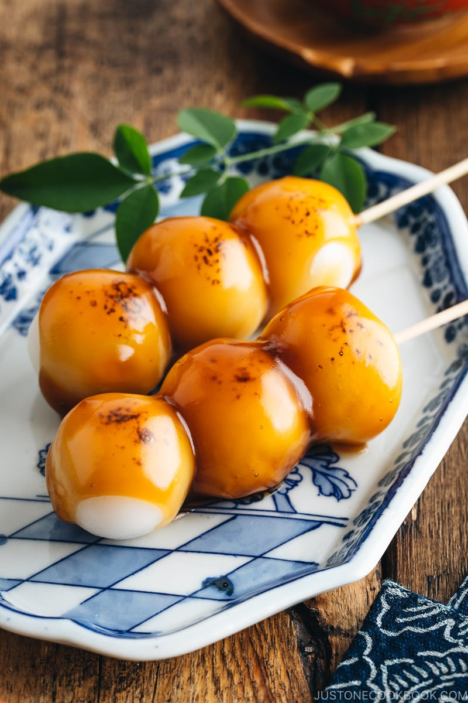

My Favorite Mitarashi Dango Recipe
>
Description
This recipe features a popular dessert in Japan. Mitarashi dango is the perfect combination of chewiness, mild sweetness, and savoriness.
You'll love the contrasting textures and flavor profile!
Ingredients for the dumplings
- 1/3 cup of joshink (Japanese rice flour)
- 3/4 cup shiratamako (glutinous rice flour/sweet rice flour)
- 2/3 cup boiling water
- Some bamboo skewers
Ingredients for the Sweet Soy Glaze
4 Tbsp granulated sugar
2 Tbsp mirin
2/3 cup water
2 Tbsp potato starch or cornstarch
Steps
- Gather the ingredients for the dumplings and sweet soy glaze.
- Soak the bamboo skewers in water. You can also start boiling a large pot of water on low heat.
- Combine ⅔ cup joshinko (Japanese rice flour) and ¾ cup shiratamako (glutinous rice flour/sweet rice flour) in a bowl. Using chopsticks, mix it all together until well blended
- When the flours start to stick together and eventually form clumps, stop adding water. Using your hands, combine the dough into one ball.
- Knead until the dough becomes smooth. The texture is like squeezing an “earlobe“ (that’s how we describe the tenderness of this type of mochi in Japanese).
- Combine the dough into a ball. Divide the dough into 8 equal pieces.Then divide each piece into 2 smaller pieces.
You will have 16 equal-sized pieces of dough. I always like to weigh mine. Each ball should be 20 grams. You may have some extra dough, but that’s okay.
- Shape each of the dough pieces into a smooth, round ball. If the dough is cracking or has some wrinkles, dip the tip of your finger in water
and apply a small amount of water to the cracked area to smooth it out.
- Just before cooking the dumplings, prepare a bowl of iced water. Once the water in the pot is boiling, gently drop each dumpling into the pot with a smooth, continuous arm motion to avoid splashing. Cook them all at once. Stir the balls occasionally so they keep their round shape and don‘t stick to the bottom of the pot.
- Transfer the dumplings to the bowl of iced water after they have risen to the top for 1-2 minutes.
- Once they have cooled, Skewer three pieces onto a bamboo skewer. Continue with the rest of the dumplings and set aside.
- Make the sweet glaze: Mix all ingredients slowly in a cold saucepan. Continue mixing until smooth and then turn on the heat to continue whisking
- When the sauce thickens, remove the saucepan from the heat and transfer the sauce to a container or bowl.
- Optional: Sear and enhance the flavor with a kitchen butane torch. You can also grill them over direct heat
- Pour the sweet soy glaze on top of the Mitarashi Dango and enjoy!